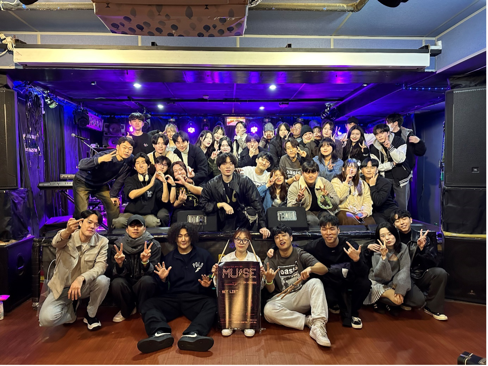

악기 연주가 좋은 어스인
▶ 가객 ◀

💚 단국대학교 어쿠스틱 밴드 중앙동아리 가객 💚
🎤 가객은 어떤 동아리인가요 ?
💬 안녕하세요 가객입니다 !
저희 가객은 1996년 김광석 선생님 별세 후 추모의 의미로 창립된 어쿠스틱 음악을 주로 다루는 밴드 동아리입니다.
🎤 음악을 많이 접하지 않았어도 괜찮나요 ?
💬가객은 많은 학우분들이 부담없이 음악을 시작하고, 함께 음악경험을 쌓으며 즐거움을 고취하는 것을 최고가치로 지향하고 있습니다.
따라서 별도의 오디션이 없으며 악기교실과 같은 초보자 부원분들을 위한 활동도 준비되어 있습니다 !
🎤 개인악기가 없어도 괜찮나요 ?
💬동이리방과 연습실에 전자피아노,기타,일렉기타,베이스 외 소형악기까지 공용으로 구비되어 있습니다 !
🎤 꼭 어쿠스틱 음악만 해야 하나요 ?
💬어쿠스틱 음악을 중심으로 하지만 여러 장르로의 확장도 열려있습니다. 유튜브 영상을 통해 확인하시면 도움이 될 것 같습니다 !
🎤 동아리방 위치와 시설은 어떻게 되나요 ?
💬 동아리방은 혜당관 6층 603호 , 연습실은 605호에 위치하고 있습니다 ! (우리은행 방향 반대편)
☝️ 동아리방(603호)에는 연습용 공용기타 , 공용피아노 , 카혼 및 하모니카, 우쿨렐레와같은 소형악기가 비치되어 있으며 소파,스마트TV,전자레인지 ,냉장고 등 편의시설 또한 구비되어 있습니다 !
✌️ 다음으로 연습실(605호)는 드럼,피아노,믹서,스피커,각종 앰프 등 합주 및 연주를 위한 장비가 구비되어 있습니다 !
✅ 주요 활동계획
- 개강총회
- 짝선배 짝후배 등 친목활동
- 교내외 버스킹 (폭포공원,한강 등)
- 연습,합주 촬영 및 유튜브 업로드
- 학기당 1회 정기공연
- 악기교실 (기타,피아노,드럼 등)
- 축제 공연 참여
- MT
- 연합 버스킹 (서울,경기권 대학교 밴드부)
- 종강총회
✅ 모집 정보 및 회비
모집대상 : 학번무관 죽전캠퍼스 재학생
회비 : 학기 당 2만원
모집기간 : 상시모집
❗️Youtube : 안녕하세요 가객입니다
https://youtube.com/@user-uc5oj6kb5l?si=krcl2K0wf3QaN93y
👉가입 신청 폼
https://forms.gle/DojMpET4TH9iLXxg6
▶ 모닥불 ◀
안녕하세요, 낭만의 상징!!
⭐️ 통기타🎶🎸동아리 '모닥불'입니다 !
❤️ 매주 진행하는 정규 기타교육 시간
🧡 선배, 동기들과 함께하는 즐거운 MT
💛 학생들이 직접 꾸리는 정기 연주회
💚 누구나 사용할 수 있는 동방 연습 기타
✏️ 기타 못 치는 사람
✏️ 기타 잘 치는 사람
✏️ 기타 배워보고 싶은 사람
✏️ 악기 하나는 멋있게 다루고 싶다! 하는 사람
대학 생활의 아름다운 추억을 저희 ‘모닥불’과 함께 만들어 가시면 좋을 것 같습니다😊
▶ MUSE ◀
